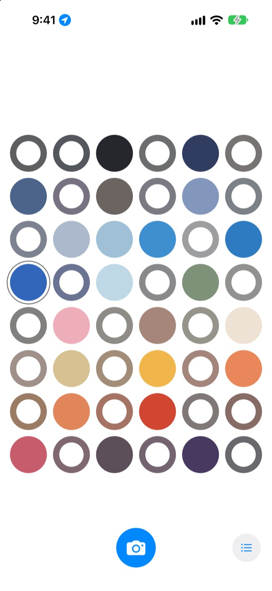
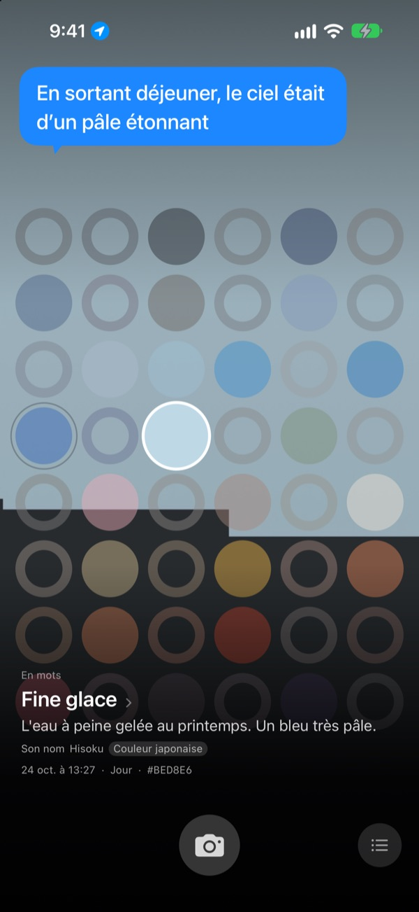
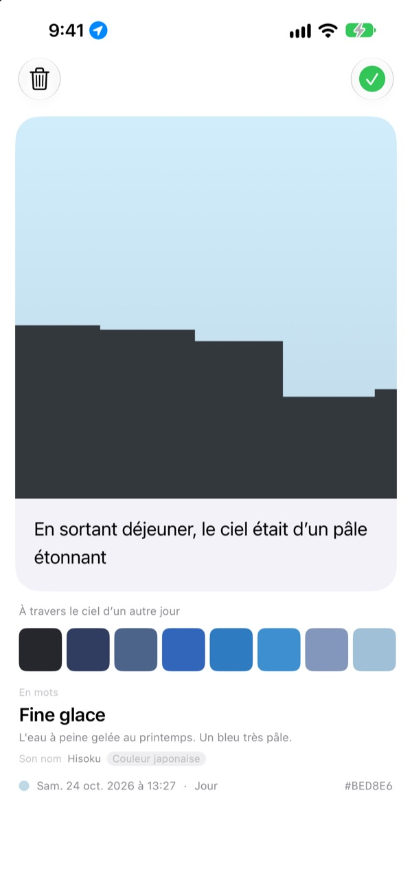
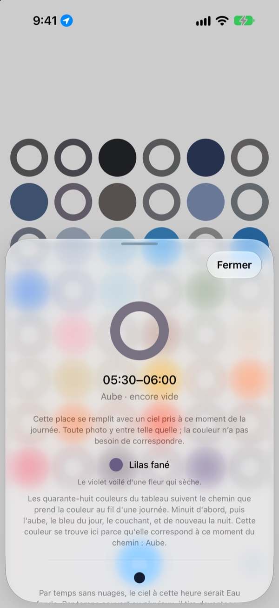
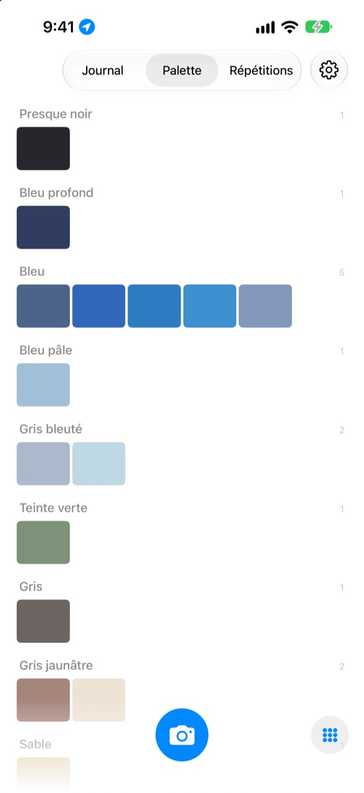

De quelle couleur
était le ciel aujourd’hui ?
Photographiez le ciel : sur une planche de quarante-huit cases, celle de l’heure se remplit de la couleur captée. Elle reçoit aussi un nom qui fait aussitôt image, comme Fine glace, Carrelage de piscine ou Kaki bien mûr.
Gratuit. Sans compte ni connexion.

Essayez la planche
Touchez une case pour voir à quel moment de la journée elle correspond. Ajoutez une photo de ciel pour remplir la case de maintenant, puis avancez de quelques jours pour voir la planche changer.
On regarde le ciel tous les jours, et aucune couleur ne reste
Le ciel du trajet du matin, celui de la sortie après le déjeuner : le soir venu, impossible de dire de quelle couleur ils étaient. Les photos de ciel qu’on a prises se perdent parmi toutes les autres. SkyDex les rassemble en couleurs et montre, sur une seule planche, le chemin qu’a suivi le ciel aujourd’hui.
Chaque ciel reçoit un nom
Chaque couleur reçoit d’abord un nom qui fait image, comme Fine glace, Carrelage de piscine ou Kaki bien mûr. En dessous vient un nom puisé à une source : couleur traditionnelle coréenne ou japonaise, pigment ou couleur web.
Quand la correspondance est proche, l’app écrit « Son nom » ; sinon, elle dit franchement « Nom le plus proche ».

Laissez une ligne
Une carte s’ouvre dès la prise de vue. Notez ce qui vous passait par la tête en levant les yeux : la phrase reviendra flotter sur le ciel chaque fois que vous toucherez cette case sur la planche.
Vous pouvez aussi poser sur cette photo la couleur du ciel d’un autre jour, et partager le résultat en image.

Les cases vides vous guident
Touchez une case vide : elle vous dit à quel moment de la journée elle correspond et quelle couleur guetter. Elle montre aussi à quoi ressemble le ciel à cette heure par temps clair, calé sur le lever et le coucher du soleil là où vous êtes.
La couleur n’a pas besoin de correspondre. Le gris d’un jour couvert est lui aussi la couleur du ciel de ce jour-là.

Journal, palette, répétitions
Parcourez vos ciels dans l’ordre et rassemblez vos couleurs en palettes par familles : bleu, gris, sable. Photographiez la même heure un autre jour, et les deux ciels se tiennent côte à côte.
Les widgets de l’écran d’accueil affichent d’un coup d’œil la planche du jour et le ciel du jour.

Trois gestes pour commencer
- 1
Levez les yeux
Touchez le bouton de l’appareil photo sous la planche et laissez le ciel remplir le carré.
- 2
Une case se remplit
La case de l’heure prend la couleur captée, et un nom.
- 3
Laissez une ligne
Sur la carte qui s’ouvre, notez ce que ce ciel vous inspirait.
Comment la planche découpe la journée
- Minuit · 0 h–5 h
- six cases
- Aube · 5 h–8 h
- six cases
- Jour · 8 h–16 h
- douze cases
- Fin d'après-midi · 16 h–18 h
- six cases
- Couchant · 18 h–21 h
- douze cases, une toutes les 15 minutes
- Nuit · 21 h–24 h
- six cases
Autour du couchant, quand le ciel change vite, les cases sont serrées ; au cœur de la nuit, quand il bouge à peine, elles sont larges. Minuit est en haut, et la journée s’écoule vers le bas.
Questions fréquentes
Comment une case se remplit-elle ?
Un ciel photographié aujourd’hui remplit la case de l’heure de la prise, même si la couleur n’est pas celle que vous attendiez : c’était vraiment le ciel à cette heure-là. Les ciels des jours précédents entrent par la couleur : quand l’un d’eux est assez proche de la couleur d’une case, il la remplit, et chaque ciel ne remplit qu’une seule case.
Une case pleine hier est vide aujourd’hui.
La planche, c’est aujourd’hui. Une case qu’un ciel d’hier remplissait grâce à son heure n’est plus rapprochée que par la couleur une fois le jour passé. Certains jours la planche est donc presque pleine, d’autres elle paraît vide. Vos photos n’ont pas disparu : tous vos ciels sont dans le Journal, et rangés par couleur dans la Palette.
Mes cases remplies pâlissent.
C’est voulu. Une photo garde sa vraie couleur pendant une semaine, puis pâlit lentement au fil des huit semaines suivantes. Elle n’est pas effacée et ne disparaît jamais tout à fait. Photographiez de nouveau le ciel à cette heure-là et la case retrouve aussitôt toute sa couleur. Pas de série à préserver, pas de score à regagner.
La couleur doit-elle correspondre ?
Non. Il n’y a ni réussite ni échec. Chaque photo est enregistrée, et le gris d’un jour couvert est lui aussi la couleur du ciel de ce jour-là.
Pourquoi l’app demande-t-elle ma position ?
Uniquement pour vous montrer, quand vous touchez une case vide, la couleur d’un ciel sans nuages à cette heure, calée sur le lever et le coucher du soleil là où vous êtes. Elle n’utilise qu’une position approximative, au kilomètre près, et aucune coordonnée n’est jamais attachée à vos photos. Si vous refusez, tout fonctionne quand même, avec Séoul comme repère.
Puis-je ajouter un ciel de ma photothèque ?
Oui. Un ciel choisi dans Photos plutôt qu’avec l’appareil photo est lui aussi recadré en carré, et remplit la case de maintenant, comme une photo prise sur le moment.
Comment supprimer une photo ?
Ouvrez la photo et touchez « Supprimer », ou balayez-la vers la gauche dans le Journal. Elle disparaît à la fois de l’appareil et d’iCloud. Si vous supprimez l’app, la copie reste dans iCloud : vos ciels reviennent à la réinstallation.
Que se passe-t-il si je change d’appareil ?
Vos ciels sont stockés dans votre propre iCloud et vous suivent sur un nouvel appareil connecté au même compte Apple. Pas de compte, pas de serveur : vos photos et vos couleurs ne sont jamais envoyées au développeur. Ni publicité ni pistage.
C’est vraiment gratuit ?
Oui, toutes les fonctions sont gratuites. Si l’app vous plaît, vous pouvez laisser un pourboire au développeur depuis l’app, mais il ne débloque rien.
Sur quels appareils fonctionne-t-elle ?
Sur iPhone avec iOS 17.0 ou ultérieur, en mode portrait uniquement.
Un bug, un comportement étrange, ou simplement quelque chose à dire : écrivez à leeo@kakao.com. Précisez ce que vous faisiez et votre version d’iOS, cela aide beaucoup à trouver le problème.